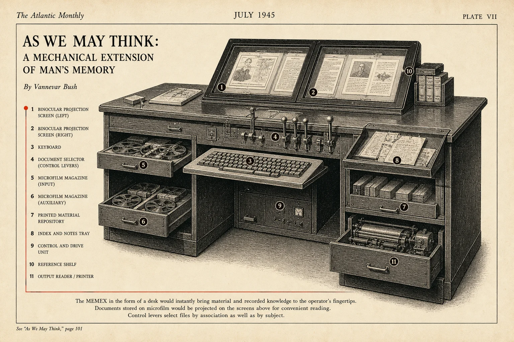

Built for Qdrant Vector Space Day 2026 · think outside the bot
Past-you already
solved this.
Local memory for Claude Code and Codex agents. The moment your agent loops on a
problem, Memex resurfaces the past session that fixed it — no chat, no search box. Powered by
Qdrant 1.18 with five named
vectors, sparse IDF, and ColBERT MaxSim multivectors.
Claude Code rewrites its own session storage every few months without announcing it, and
auto-updates silently delete the old files. Anthropic’s CHANGELOG mentions none of it.
GitHub Issues, on the other hand, are full of data-loss reports.
Search the official CHANGELOG.md for “transcripts directory” or “migration” —
zero hits. Meanwhile your memory is being rewritten under you.
01 · Memex’s answer
Read both legacy and modern paths.
parser::parse_transcript_session handles the older
{type, timestamp, content} schema, so your last 1,000–2,000 transcripts join
the modern corpus on the same Qdrant point space.
~/.claude/history.jsonl — 24,000+ prompts across 6–12
months — survives every Claude Code migration. The dashboard heatmap is drawn from this,
with indexed sessions overlaid.
survives every migration03 · Memex’s answer
One-click Qdrant snapshot.
Once you’ve indexed, your corpus is yours. Future Anthropic cleanups
can’t touch the points sitting in qdrant_storage/.
corpus is portable
§ 02 · Architecture
One Rust binary. Edge to edge.
From append-only JSONL on disk to a typed MCP tool the agent can call — the whole path is
one Rust binary, one Qdrant collection, one embedder. Hover any stage to read its job.
01 · ingest
Sources
~/.claude/projects ~/.codex/sessions
02 · embed
Embedder
fastembed BGE-small 384-d · cosine
03 · store
Qdrant v3
8 vector slots/point TurboQuant bits-2
04 · query
Fusion lanes
Formula + exp_decay 5 lenses · MMR · RRF
05 · expose
MCP
12 typed tools stdio + HTTP
06 · land
Surfaces
Tauri · Docker Claude · Codex · Cursor
auto-cycling · hover any stage to pause
01 · Sources
Append-only JSONL on disk.
Memex never asks where your history is — it watches the standard locations.
Claude Code writes one JSONL per session into
~/.claude/projects/<cwd>/<uuid>.jsonl. Codex CLI
writes one rollout per session into
~/.codex/sessions/YYYY/MM/DD/rollout-*.jsonl. The files are append-only and
re-readable, so the corpus is replay-friendly by construction.
Format
JSONL (one event per line)
Watcher
notify + content-hash dedup
Privacy
secrets redacted before embed
Tests
27 unit · Cold Start Killer
§ 03 · Primitives
Five Qdrant primitives. One playground.
Each surface above maps to a specific Qdrant 1.18 server-side feature a single-vector setup
couldn’t reproduce. Drag the Lens sliders — the score is recomputed live in the browser
with the same conceptual blend the server runs.
No. 01 — Lens
Look through a chosen lens.
Qdrant named vectors · prefetch chain · Query::new_formula
Five dense lenses over the same conversation. Watch the weights cycle through
“what did past-me run when this error fired in this file?”
and four other presets — the Σ score recomputes live and the list re-orders.
Grab any slider to drive yourself.
auto · lens preseterror lensdrag any slider to take over
lens weights0 – 2.00
1.00
1.00
1.00
1.80
0.40
recalled6 of 1,024 · ranked by Σ
No. 02 — Topology
A galaxy of your work.
Qdrant Distance-Matrix · search_matrix_pairs
A force-directed scene over a year of sessions. Each dot is one session — same color
= same project, short edges = semantically close, longer cross-project edges = ideas
that bridged your work.
4projects
72sessions
9bridges
distance-matrix force-directed · auto rotating · longest edges connect projects
No. 03 — Discovery
Ask for this, but not that.
Qdrant Discovery API · ContextInputPair
Drop a few example sessions onto the anchor list — positives pull, negatives push.
One round-trip returns candidates ranked by discovery_score. No query text needed —
the examples are the intent.
auto · discovery intentauth-retry patternsclick any ± to take over
discovery anchorsclick ± to toggle
discoveredranked by discovery_score
No. 04 — Recall
Catch the error while it is still hot.
dedicated error vector · has_errors payload index
The watcher embeds failing tool turns into a dedicated error lens. The
has_errors payload index runs as a cheap HNSW pre-filter, keeping happy-path
sessions out of the recall feed.
Native snapshot export over HTTP. The server stitches the whole collection — vectors,
payload, HNSW graph — into one restorable file. No client-side dump, no SDK lock-in.
Portable across machines, durable through every silent migration. Restore on any machine
with one command.
memex_sessions_v3-2026-05-29.snapshotauto
▸ auto · cycling snapshot demo
§ 04 · Surfaces
Eight surfaces. Zero chat windows.
Each surface in Memex maps to a different Qdrant primitive — named vectors → matrix sampling →
discovery → payload filtering → snapshots → recommendation. None of these are the
“embed text, retrieve, feed to an LLM” loop of classical RAG. Click any thumbnail.
§ 05 · Agents
Memory shows up in the model’s turn.
Three surfaces sit on top of MCP and four Claude Code hooks. Scrub the timeline to see what
Memex actually injects, and when. Each step is a real hook in the wild.
Cold Start Killer · SessionStart hook
01 · get_project_memory
The agent walks in with memory.
memex companion — markdown primer
§ 06 · Run
Two ways. Same Rust core.
Pick the native macOS app for live proactive recall in the menu bar, or the all-in-one
Docker image that bundles Qdrant + MCP + indexer. Both call the same binary.
memex — zsh · ~/projects/memex
# Build the .app bundle (Apple Silicon)npm run tauri build# Launch — Memex.app lands in the menu baropen src-tauri/target/release/bundle/macos/Memex.app# Wire Claude Code + Codex + Cursor + shell — one shotmemex install all
Native Tauri app.
macOS menu-bar resident. Watches ~/.claude/projects and
~/.codex/sessions, indexes on save, and surfaces proactive recall as a quiet
notification. .dmg shipped on the
v0.1.0 release
for users who want to skip the build.
One Rust binary · no Electron
OS notifications · Loop Breaker banner
Auto-indexes on file save (notify watcher)
Apple Silicon native · macOS 11+
memex-allinone — zsh · localhost:8765
# Build the all-in-one image (Qdrant + indexer + MCP)docker build -t memex-allinone -f deploy/web/Dockerfile .# Run — sample corpus auto-indexes on bootdocker run --rm -p 8765:8765 memex-allinone# Wire it into the Claude CLI (HTTP transport)claude mcp add --transport http memex-web http://localhost:8765/mcp
One container, MCP wired.
Qdrant 1.18.1 + indexer + MCP server in a single image. Non-root (uid 10001),
tini as PID 1, BGE-small pre-baked, loopback-only by default.
SSRF allowlist on the Qdrant URL.
docker build → docker run · sample corpus pre-indexed
Bundles Qdrant 1.18.1 · v3 schema
stdio + HTTP :8765/mcp transports
Prometheus /metrics · 8 metric families
283 lib + 5 integration tests green
§ 07 · Reach
Past-us. Not just past-you.
One reader becomes a reading room. The boundary grows from your laptop to a tenant your company
owns — the privacy promise moves with it, never away from it.
Roadmap · not shipped
is_tenant=true on project_name — Qdrant multitenancy
memex serve — headless Qdrant + API + MCP, one container
redact.rs — secrets scrubbed before any vector is written
SHA-256 snapshot envelope — verify it, lift it, walk away
The work ahead
beyond code — any LLM app, not just coding agentsChatGPT · Claude · Gemini sessions, one memory
sign-on · SCIM · roles scoped to the tenant
append-only record of what was indexed
retention windows · per-tenant enforcement
There is no Memex server in the data path — your cluster, your keys. This is shared memory
for a team, never surveillance of one. We’d rather ship nothing here
than ship the version that watches people.
§ 08 · Lineage
As we may think — and at last, as we may remember.
Memex is the name of a desk, and the desk is older than the desktop. This is its 2026 reissue.

Plate VII · Speculative reconstructionThe Atlantic Monthly · As We May Think · July 1945
Vannevar Bush imagined Memex in As We May Think — a desk-sized device for the
associative trails of personal records. Bush’s
mechanical levers are now five Qdrant primitives. The microfilm magazines are JSONL files in
~/.claude/projects. The reader is you.
When the inside of the head runs out, you build a device on the outside that follows the trail
for you. Polaroids, tattoos, a wall of notes — Memex is the same lesson, applied to a directory
of session files.